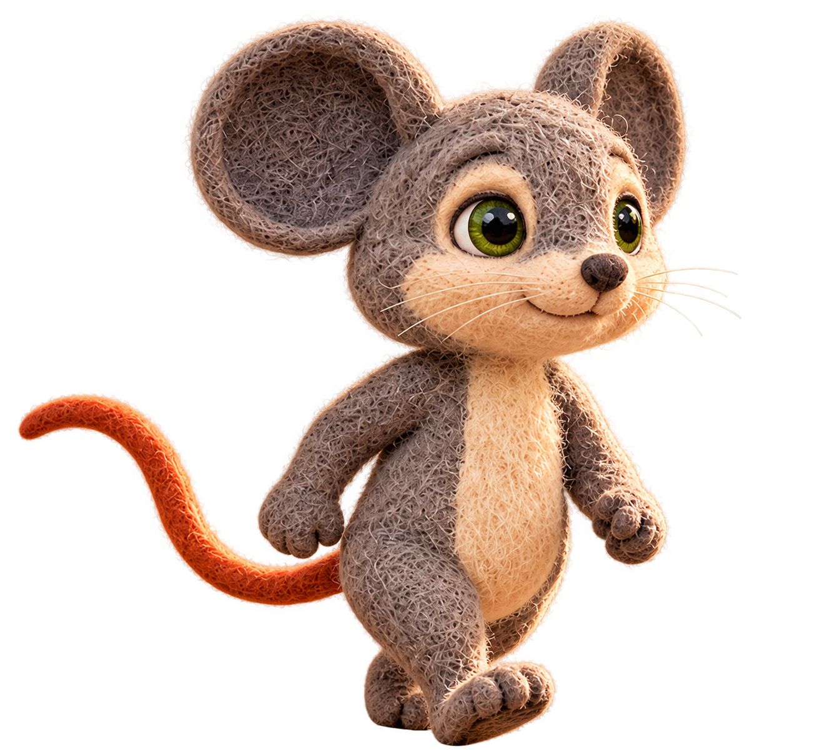

From S01-L002-B03-I02. Pending owner review; rejected r001 retained as history.

Transparent replacement follows preferred source forward-lifted foot, straighter torso and arm/tail arrangement. Native image visually inspected; generated isolation may redraw detail and is not pixel-identical extraction. Tight upper ear clearance; no visible teeth. Pending owner review, not approved.